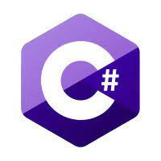

Ensino a programar em 4 linguagens atualmente sendo elas:
Python que é uma linguagem Open-Source de propósito geral usado bastante em data science, machine learning, desenvolvimento de web, desenvolvimento de aplicativos, automação de scripts, fintechs e mais.
Java que é uma linguagem de programação e plataforma computacional lançada pela primeira vez pela Sun Microsystems em 1995. Existem muitas aplicações e sites que não funcionarão, a menos que você tenha o Java instalado, e mais desses são criados todos os dias.

C# (CSharp) é uma linguagem de programação orientada a objetos criada pela Microsoft, faz parte da sua plataforma . Net. A companhia baseou C# na linguagem C++ e Java. C# (CSharp)
R é uma linguagem versátil, desenvolvida por dois pesquisadores do departamento de Estatística da Universidade Auckland, na Nova Zelândia. Ela surgiu a partir da necessidade de um programa que auxiliasse na manipulação, análise e visualização de dados. Nesse sentido, desde 2020, essa ferramenta de código aberto e multiparadigma ocupa o 33º lugar no ranking de linguagens mais utilizadas do GitHub.